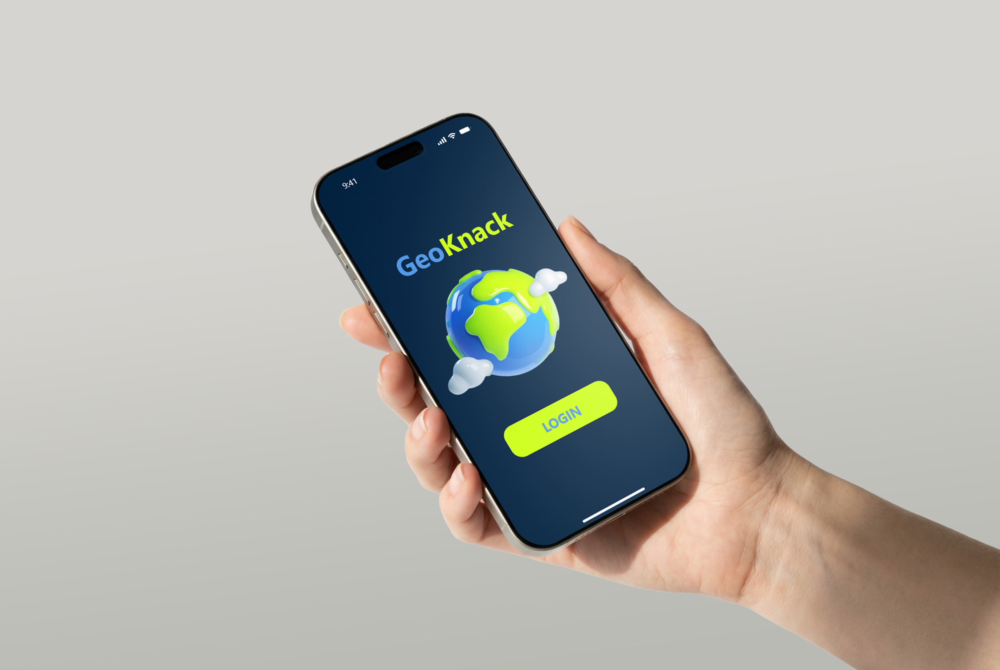

Hi, ich bin Finja Bormann. Ich gestalte digitale Produkte an der Schnittstelle von Design, Code und Kunst.




Projekte

Pia's Adventures
Eine personalisierte Website für Reise-Blogs
TSG Hatten-Sandkrug
Eine Handball-App zur Organisation von Vereinsnews und Spielen
Dark Patterns
Meine Bachelorarbeit im Bereich Medieninformatik
GeoKnack
Ein Mobile-Spiel rund um Geografie

TSG Hatten-Sandkrug
Konzeption und Gestaltung des Social-Media-Auftritts eines Handballvereins
Galerie


Über mich
Bio
Hi, ich bin Finja. Ich liebe es, Design, Kunst und Code miteinander zu verbinden und daraus inspirierende digitale Erlebnisse zu schaffen. Durch mein Studium der Medieninformatik habe ich gelernt, Gestaltung und technisches Denken zusammenzubringen.
Für mich beginnt gutes Design mit Verständnis. Deshalb stehen die Menschen, die ein Produkt nutzen, immer im Mittelpunkt. Mein Ziel ist es, digitale Produkte zu entwickeln, die intuitiv, ästhetisch und barrierearm sind.
Erfahrung
Freelance Digital Design
Konzeption und Gestaltung digitaler Produkte (u.a. Websites, Social Media) für Kunden
B.Sc. Internationaler Studiengang Medieninformatik
Abschlussarbeit im UI/UX Design
Auslandssemester BUI Bangkok University International
Studiengang Creative Communication Design
Praxissemester CEWE Social Media Marketing
Konzeption und Gestaltung von Social Media Beiträgen, Paid und Organic Analytics
HSB Institut für Digitale Teilhabe
Studentische Mitarbeiterin in Forschungsprojekten rund um Digitale Barrierefreiheit
Services
- Videoschnitt
- Social Media Konzeption
- Content Creation
- Branding
- Website Design und Entwicklung
- App Design
- Print Design
- UI/UX Design